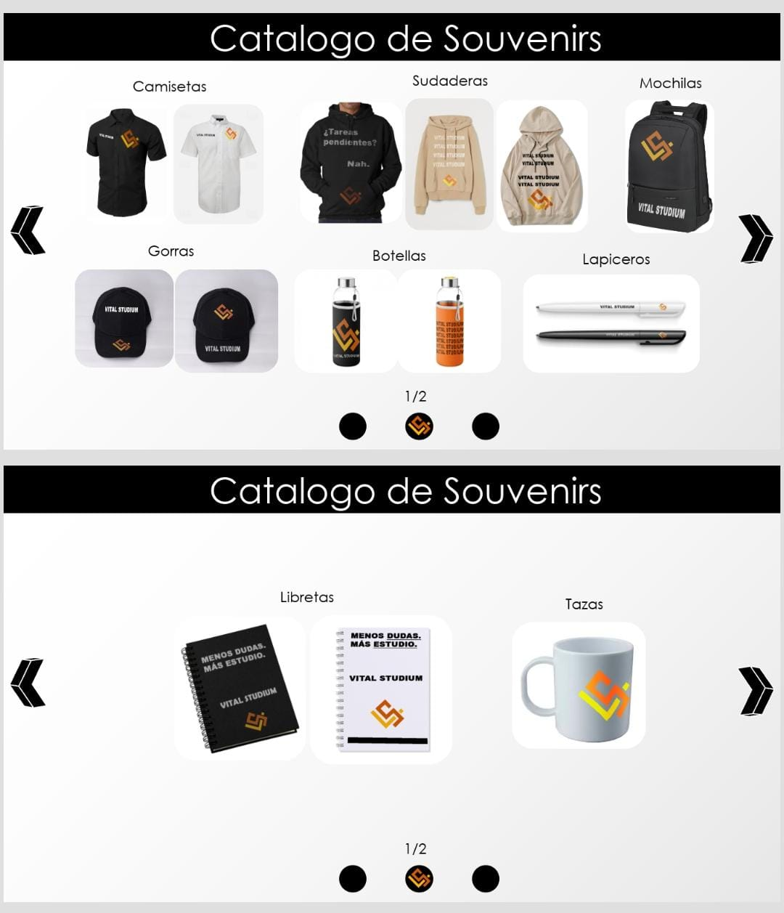

3ER SEMESTRE
IT ESSENTIALS
Dentro de estás primeras clases obtendras los conocimientos que te serán de mucha utilidad, hablando desde mi experiencia, este curso te capacita en distintas áreas de la informatica como lo son el armado de pc's, su cuidado, la instalación del BIOS, entre muchas otras cosas, los cursos son interesantes, bastante intuitivos con una evaluación al final de cada clase, muy recomendado!!!
JAVA
De mis clases favoritas, antes de entrar en éste lenguaje de programación, verás los principios logicos de ésta, la creación de algoritmos y la resolución de problemas utilizando la creatividad, usaarás programas con psInt para culminar en el aprendizaje del famoso lenguaje JAVA en el cual resolveras problemas, crearás graficos y verás lo increible del mundo de la programación. También podrás crear tu propia pagina web ya que verás HTML, CSS y JavaScript. (super recomendado)
4TO SEMESTRE
PAQUETERIA OFFICE
En éstas clases aprenderás a utilizar la paqueteria de office de una manera eficiente y profesional, con actividades divertidas y uno que otro dato que quizás no sabias para mejorar el desempeño en éstos softwares!
APPS EN IOS
Gozarás de la oportunidad de crear una aplicación para IOS con ésta clase, con un curso detallado, paso a paso que te llevarán a desarrollar lo que posiblemente sea tu primera app!!.

5TO SEMESTRE
EDITORES DE IMAGENES Y SONIDOS
¿te gusta consumir contenido audiovisual? pues dentro de éstas clases se te enseñará a como crear videos y audio para distintos tipos de áreas, dando un enfoque más especifico a anuncios para una empresa de la cuál tambien serás creador o creadora, explota tu lado más creativo aquí!
INOVACIÓN Y TECNOLOGIA
En ésta sesión te enseñaran los ultimos avances de la tecnología, estudiando casos de exito, dando pie que tu también innoves y busques una manera creativa y eficiente de ayudar!
6TO SEMESTRE
ANIMACIÓN Y VIDEO
seguimos con la creatividad en ésta capacitación!, animación y video serán las clases que te enseñaran a que tus ideas cobren vida através de diferentes softwares de animación para que puedas enseñarlas a todo mundo!.

EMPRENDIMIENTO
de mis clases favoritas, aqui te sumergirás en el mundo del emprendimiento, estudiarás sus conceptos más importantes y no solo eso, tendrás que innovar con tus ideas, no solo crear tu propio producto, si no también crear tus propios anuncios digitales e impresos, diseña, plantea y actua para que tu empresa llegue lejos!
